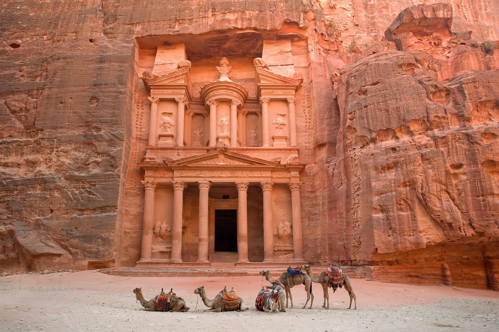

Petra
The ancient city of Petra, Jordan, is located in a remote valley, nestled among sandstone mountains and cliffs. It was purported to be one of the places where Moses struck a rock and water gushed forth. Later the Nabataeans, an Arab tribe, made it their capital, and during this time it flourished, becoming an important trade center, especially for spices. Noted carvers, the Nabataeans chiseled dwellings, temples, and tombs into the sandstone, which changed color with the shifting sun. In addition, they constructed a water system that allowed for lush gardens and farming. At its height, Petra reportedly had a population of 30,000. The city began to decline, however, as trade routes shifted. A major earthquake in 363 CE caused more difficulty, and after another tremor hit in 551, Petra was gradually abandoned. Although rediscovered in 1912, it was largely ignored by archaeologists until the late 20th century, and many questions remain about the city.
